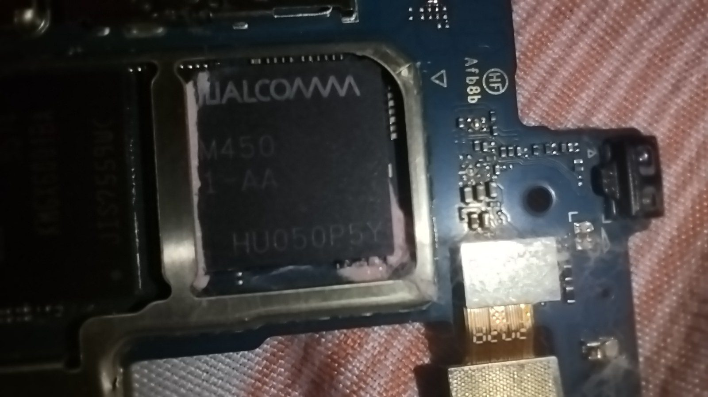

Unit 1 · Lesson 4
From smartwatch to supercomputer
Types of computers, the building behind 'the cloud', the technologies arriving now, and Turing's question in 2026.
What the test will ask
After this lesson you should be able to:
- Name the types of computer (desktop, laptop, tablet, smartphone, wearable, console, server, mainframe, supercomputer, embedded) with one strength and one use each.
- Say what a supercomputer and a data centre are, name Leonardo (CINECA, Bologna) and give one environmental cost of the cloud.
- Describe four emerging technologies: AI / large language models, quantum computing, extended reality, robotics and autonomous vehicles.
- Explain what the 2024–25 Turing-test studies found and state the Chinese Room argument.
- Give an argument for and an argument against 'machines can think', using the Turing test or the Chinese Room.
The story
Count the computers in the room. Each PC, the projector, the printer, the router, the smartboard, every phone and watch, the thermostat: thirty or more, and most of them hidden. A computer inside another device, built to control it, is an embedded computer: in the washing machine, in the car (fifty to a hundred and fifty of them, running more code than a passenger jet), in the Tech Club bin.


At the other end of the scale are the computers you never see. A server has no screen and sits in a rack, serving hundreds of people: the school's shared folder lives on one. A mainframe is the bank's computer: not the fastest, but the one that has processed card payments every second for thirty years without stopping. A supercomputer is thousands of computers working as one on science.

Italy has one of the big ones. Leonardo, at CINECA in Bologna, switched on in 2022 in a former tobacco factory with nearly fourteen thousand GPUs; it entered the world ranking in fourth place and works on the climate, new medicines, materials and AI. Next door, Europe's weather forecasts are computed. The cost of all this computing is real: data centres use between one and two percent of the world's electricity and rivers of water to stay cool.
Four technologies are arriving now. Large language models (ChatGPT, Claude, Gemini) are trained on thousands of GPUs to predict the next word, and they chat about anything. Quantum computers use the strange rules of very small things; a big enough one could break today's encryption, Enigma's great-grandchild. Extended reality puts a computer on your face. Robots and robotaxis are computers whose outputs are motors, already carrying passengers in American cities.
Which brings the question back. Turing bet that by 2000 a machine would fool people three times in ten. In 2024 and 2025 researchers in California ran the real test with chatbots: one, told to behave like a young person who uses slang, was judged human 73 % of the time, more often than the real humans. By Turing's own rule, machines now pass. The reply, written in 1980 by the philosopher John Searle, is the Chinese Room: a man who speaks no Chinese follows a huge rule book and sends out perfect Chinese answers. The room passes the test. Does anyone in it understand Chinese? The CPU follows rules it does not understand, billions a second. Same room, faster clerk?
The notes
Everything from the lesson, in order. This is the part to study.
Types of computer
| Type | Strength / weakness | Typical use |
|---|---|---|
| Desktop | most power per euro, upgradeable; not portable | gaming, video editing, office |
| Laptop | portable, battery; harder to upgrade, hotter | school, work on the move |
| Tablet | touch, light; limited software | reading, drawing, video |
| Smartphone | always with you, 10+ sensors; small screen | everything, in your pocket |
| Wearable (smartwatch) | health sensors; tiny battery and screen | steps, heart rate, notifications |
| Games console | custom GPU, fixed hardware so games are optimised for it; sold at a loss, the games pay | gaming at a fixed price |
| Server | no screen, in a rack, serves many users at once | the school's shared folder, websites, email |
| Mainframe | thousands of transactions a second, reliability for decades; old and expensive | banks, airlines, insurance |
| Supercomputer | millions of cores on one huge calculation | climate, drugs, materials, AI training |
| Embedded / IoT | a small computer (microcontroller) inside another device; no screen, one job, often no updates | cars, fridges, washing machines, the Arduino bin |
Microcontroller (Arduino's chip): CPU, memory and input/output on one chip, running one program with no OS. Microprocessor (a PC's CPU): needs external RAM, storage and an OS.
Supercomputers and data centres
- Leonardo, CINECA, Bologna (Tecnopolo, a former tobacco factory), operational since November 2022, part of EuroHPC: about 3,500 GPU nodes with nearly 14,000 NVIDIA GPUs, peak about 250 petaflops (10¹⁵ operations a second); it entered the TOP500 list in 4th place. Used for climate models, new materials, medicine, AI.
- The fastest machines (Frontier, El Capitan in the USA) are exascale: 10¹⁸ operations a second. Europe's first exascale-class machine, JUPITER, started in Germany in 2025.
- A supercomputer = thousands of servers (nodes), each with CPUs and GPUs, joined by a very fast network, running one program split across all of them. They all run Linux.
- A data centre is a building full of servers: 'the cloud'. Data centres use about 1–2 % of the world's electricity and millions of litres of water a day for cooling; near Milan, new ones are limited by the electricity grid.
'The cloud' is a building. It gets hot, and it is thirsty.
Emerging technologies
| Technology | What it is | Where it stands |
|---|---|---|
| AI / large language models | a network of billions of numbers trained on huge amounts of text to predict the next word (ChatGPT, Claude, Gemini); trained on thousands of GPUs | everywhere since 2022; does it understand? Our question |
| Quantum computing | qubits can be 0 and 1 at the same time; promising for chemistry and for breaking today's encryption (Shor's algorithm, 1994) | still experimental; governments already switching to post-quantum codes |
| Extended reality (VR/AR) | a headset with cameras, eye- and hand-tracking as inputs; a computer on your face | Meta Quest sells millions for games; Apple Vision Pro (2024) is niche |
| Robotics and autonomy | computers whose outputs are motors: robotaxis (Waymo in Phoenix, San Francisco, Los Angeles), warehouse robots, humanoids | being tested in real cities; cheap humanoids arrived in 2025 |
Can machines think? The question in 2026
- 1950: Turing predicts that by 2000 a machine will fool an average interrogator about 30 % of the time after five minutes.
- 1966: ELIZA (Joseph Weizenbaum, MIT), a few hundred lines that turn your sentences into questions, already fools some users. The tendency to see a mind in a chatbot is called the ELIZA effect.
- 2014: a chatbot pretending to be a 13-year-old convinces 33 % of judges; most researchers call the persona cheating.
- 2024–25: studies at UC San Diego (Jones and Bergen): GPT-4 judged human about half the time; a newer model with a persona judged human 73 % of the time, more often than the real people. Judges who asked hard questions lost; small talk and jokes worked better.
- By Turing's own rule, machines now pass. Whether that settles the question is the debate.
For: it passes the behavioural test. Against: passing a test of imitation is not understanding.
The Chinese Room (John Searle, 1980): a person who speaks no Chinese sits in a room with a huge rule book; questions in Chinese come in; he follows the rules and sends perfect answers out. The room passes the test, but nobody in it understands Chinese. Searle's point: following rules (syntax) is not understanding (meaning). The CPU follows rules it does not understand, billions per second.
The systems reply: the clerk does not understand Chinese, but the whole room (clerk + rule book + paper) might, just as no single neuron understands English. Searle's answer: let the clerk memorise the whole book; he still does not understand.
Check now
Quick questions. You see the answer at once.
Which type of computer?
- 10,000 bank payments a minute for 30 years — ?
- the school's shared folder — ?
- the chip controlling a washing machine — ?
- the ten-day weather forecast for Europe — ?
Where is Leonardo?
- Turin
- Bologna (CINECA)
- Milan
What does the Chinese Room argument say?
- machines can think because they pass the test
- following rules is not the same as understanding
- computers cannot speak Chinese
Try it
Now that you know what is inside the machine, play Turing's game again. Has your strategy changed?
Read each answer and guess: was it written by a person or by a chatbot? Then read the clue. In the 2025 studies, judges did best with small talk and jokes, not with hard questions.
Paper version
Play Turing's game on paper. For each question, read the answer and write PERSON or CHATBOT, with one reason. Clues that often give a machine away: it is too polite, too fast, too complete, never says 'I don't know', and does not know what happened in the room today.
Your turn
Exercises
From ★☆☆ (easy) to ★★★ (hard). Use a hint if you are stuck.
-
Exercise 1 ★☆☆
Why does a €500 console run games better than a €500 PC?
- consoles have faster CPUs
- every console is identical, so games are tuned for it, and it is sold at a loss
- PCs cannot run games
-
Exercise 2 ★☆☆
A mainframe is the fastest kind of computer.
True or false?
-
Exercise 3 ★☆☆
Match the emerging technology to its description.
- large language model — ?
- quantum computer — ?
- extended reality — ?
- robotaxi — ?
-
Exercise 4 ★☆☆
In which year did Searle publish the Chinese Room argument?
-
Exercise 5 ★★☆
In the 2025 Turing-test study, what helped the judges most?
- hard maths questions
- small talk, jokes and strange questions
- asking for the capital of France
-
Exercise 6 ★★☆
What is a microcontroller?
- a small person who controls things
- a chip with CPU, memory and input/output on it, running one program with no OS
- a supercomputer for phones
-
Exercise 7 ★★☆
Why is 'the cloud' an environmental issue?
- clouds cause rain
- data centres use 1–2 % of the world's electricity and huge amounts of water for cooling
- servers are made of plastic
-
Exercise 8 ★★☆
A hospital uses a mainframe computer. Give two reasons why it does not use ordinary desktop PCs instead. [2]
-
Exercise 9 ★★★
Explain what the Turing test is and give one reason why passing it may not prove that a machine thinks. [3]
-
Exercise 10 ★★★
Describe how a GPU differs from a CPU and why GPUs are used to train AI systems. [3]
Words of this lesson
- desktop computer fisso
- a computer in a case on a desk: most power per euro, upgradeable, not portable
- laptop portatile
- a portable computer with a battery
- wearable dispositivo indossabile
- a computer you wear: smartwatch, fitness band
- games console console
- a computer with fixed hardware built for games
- server server
- a computer without a screen that serves many users over a network
- mainframe mainframe
- a very reliable computer that handles thousands of transactions a second (banks, airlines)
- supercomputer supercomputer
- thousands of computers working as one on an enormous calculation
- embedded computer sistema embedded
- a computer built inside another device to control it
- microcontroller microcontrollore
- a chip with CPU, memory and I/O together, running one program with no OS (Arduino)
- IoT Internet delle cose
- Internet of Things: embedded computers connected to the network
- data centre data center
- a building full of servers: the physical cloud
- the cloud il cloud
- computing and storage on someone else's servers, reached over the internet
- Leonardo Leonardo (CINECA)
- Italy's supercomputer at CINECA, Bologna (2022), one of Europe's most powerful
- petaflops / exaflops petaflops / exaflops
- 10¹⁵ / 10¹⁸ operations per second
- large language model (LLM) modello linguistico di grandi dimensioni
- an AI trained on huge amounts of text to predict the next word (ChatGPT, Claude, Gemini)
- quantum computing calcolo quantistico
- computers using qubits, which can be 0 and 1 at once; still experimental
- extended reality (XR) realtà estesa
- virtual and augmented reality headsets
- autonomous vehicle veicolo autonomo
- a car driven by a computer, with sensors as inputs and motors as outputs
- ELIZA ELIZA
- a 1966 chatbot that turned your sentences into questions and fooled some users
- ELIZA effect effetto ELIZA
- our tendency to see a mind in a chatbot
- Chinese Room stanza cinese
- Searle's 1980 argument: a room that answers perfectly in Chinese without anyone understanding Chinese; following rules is not understanding